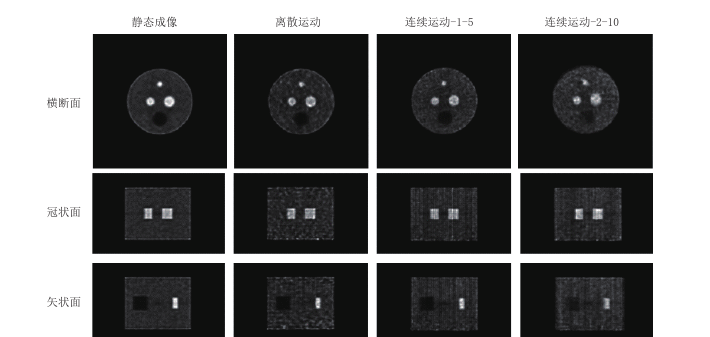

When PET Fits the Question: Application-Specific All-Digital Imaging
Positron emission tomography (PET) is often described as a molecular camera for living systems. Rather than depicting anatomy alone, it follows how radiotracers are taken up, metabolized, and transported. This ability to capture otherwise invisible biochemical processes makes PET valuable not only in clinical diagnosis, but also in proton therapy, neuroscience, drug research, and plant science.
These new applications expose a practical limitation. A conventional PET scanner resembles a studio with fixed camera positions: once its geometry and acquisition chain are set, it is difficult to accommodate fundamentally different tasks. Proton therapy demands an open beam path and very high count-rate capability. Brain imaging benefits from detectors placed close to the head. Plants must remain upright in a controlled environment, while awake animals continue to move during a scan. Redesigning an entire scanner for every problem is slow and costly.
Reconfiguring PET Like Building Blocks
The platform described in the paper is built on multi-voltage threshold (MVT) sampling. Several programmable voltage thresholds record when a scintillation pulse crosses different amplitudes, allowing algorithms to reconstruct the pulse. Compared with conventional systems that depend on complex analog electronics and hardware coincidence logic, this approach leaves sampling and transmission to modular detector units while system geometry, coincidence decisions, and image reconstruction can be adapted in software.
Modularity does not mean casually assembling a precision instrument. It separates stable detector units, reconfigurable geometry, and upgradable algorithms into distinct layers. Researchers can therefore rearrange detectors around a scientific question and shorten the route from concept to working prototype.
- Proton therapy: verify the proton interaction range during irradiation;
- Brain science: improve sensitivity with compact rings or helmet-like geometry;
- Plant research: adapt the scanner to different plant heights, diameters, and growth environments;
- Awake-animal research: track motion and correct projection data while observing brain function in a more natural state.
Proton Therapy: Verifying Range amid Intense Background

Protons deposit much of their energy near the Bragg peak at the end of their path. This helps spare healthy tissue, but uncertainty remains in the actual stopping position. PET can detect positron-emitting nuclides created by nuclear reactions between protons and tissue, providing an indirect means of checking the beam range.
The difficult case is imaging while the beam is on. The scanner must handle short bursts of high event rates together with prompt gamma rays, neutrons, and other background. The team's panel-based all-digital PET system provides an adjustable field of view and uses radio-frequency phase information to separate useful events from background. The paper reports an average measured in-beam count rate of 4.85 Mcps and feasibility tests with water, mouse, and rat phantoms or subjects.
Brain Imaging: Bringing Detectors Closer
PET sensitivity is closely related to the solid angle covered by its detectors. A brain-dedicated system does not need the large bore of a whole-body scanner. Its ring can be smaller, or its detectors can conform more closely to the head, increasing the number of useful events recorded in a limited scan time.
The brain-dedicated all-digital PET system described in the paper uses 44 detectors, a ring diameter of 375 mm, and an axial field of view of 201.6 mm. With three-dimensional iterative reconstruction incorporating a point-spread-function model, spatial resolutions at the center of the field of view were approximately 1.65, 1.7, and 1.8 mm along the three axes. After installation at the First Affiliated Hospital of Sun Yat-sen University, the system completed more than 280 complex brain examinations over a period of just over three months.
A second, helmet-shaped scanner uses a hemispherical geometry and a lifting mechanism, reducing dependence on a conventional fixed scanning posture. The paper reports a peak absolute sensitivity of 5.97 percent and more than 50 imaging examinations at Tongji Hospital, Tongji Medical College, Huazhong University of Science and Technology. These figures describe specific prototypes and test conditions; they should not be interpreted as clinical conclusions on their own.

PET for Plants: Following Water and Nutrients
A plant cannot simply lie down on a scanner bed. It needs appropriate light, temperature, and humidity, and its height and diameter change as it grows. A conventional cylindrical scanner therefore struggles to combine a natural growth environment with sufficient vertical coverage and mobility.
The proposed plant PET system consists of two movable half-cylinders whose separation can be adjusted, with further work exploring a smaller portable design. Detectors can be arranged around a stem to observe the transport of carbon, water, and nutrients without destroying the specimen. The paper primarily presents system design, simulated performance, and phantom imaging, so the platform should be understood as an evolving research instrument rather than a finished general-purpose product.

Imaging Awake Animals When Both Scanner and Subject Are Dynamic
Small-animal brain PET commonly uses anesthesia or restraint to reduce motion artifacts. Anesthesia, however, can alter cerebral blood flow, body temperature, heart rate, and tracer uptake; restraint-related stress can also affect metabolism. Observing brain function under more natural conditions requires the animal to move freely while its position and orientation are measured continuously.
The dual-dynamic system combines a four-panel PET scanner, a four-camera pose-measurement setup, and motion-correction algorithms. The cameras estimate movement continuously, and time-stamped lines of response are mapped back to a reference position. To address parallax errors associated with panel geometry, the team also developed detectors and reconstruction methods that estimate depth of interaction (DOI). The paper reports a best average DOI resolution of 2.11 mm; simulations indicate that combining DOI information with motion correction substantially suppresses deformation and motion artifacts.

Real Innovation Means Letting the Instrument Follow the Question
Panels, rings, helmets, and adjustable half-cylinders are only the visible changes. The deeper value of application-specific all-digital PET is the shift from building an entirely new machine for every application to recombining detector modules, geometry, and algorithms on a shared digital foundation. That approach allows instrumentation to respond more quickly to real scientific and clinical questions.
The paper also anticipates intraoperative PET, pediatric PET, and PET for radiotherapy navigation. Clinical translation will require further engineering validation, quality control, trials, and standards. Even so, specialization points to a clear direction: PET need not remain a fixed diagnostic scanner. It can become a real-time measurement tool during treatment, or an experimental platform for studying the brain, drugs, and living plants.
This article is an independently written science-news adaptation of Xinyu Li, Yu Liu, Ran Cheng, Qingguo Xie, and Peng Xiao, “Innovative Application-Specific All-Digital PET Systems,” published in CT Theory and Applications, vol. 33, no. 4, 2024, pp. 448-458. The original full text is in Chinese. DOI: 10.15953/j.ctta.2024.012.